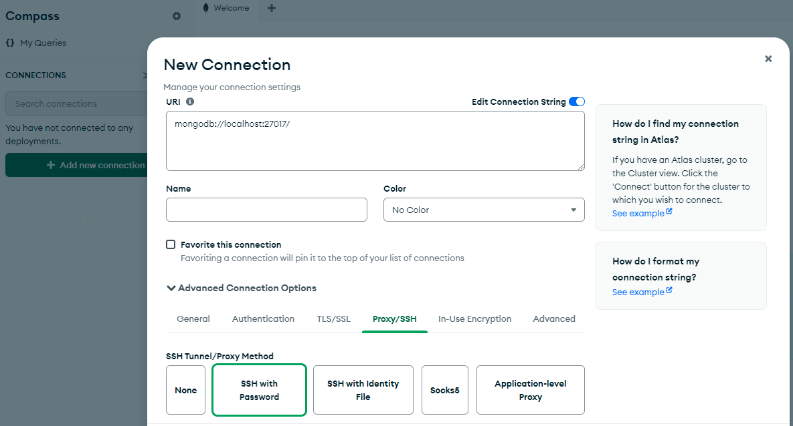
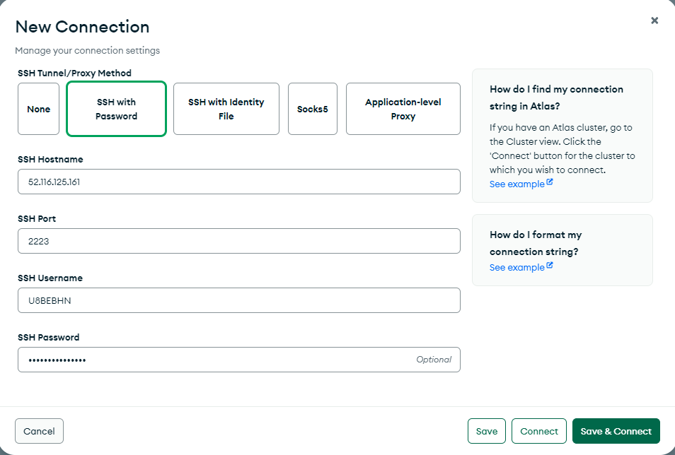
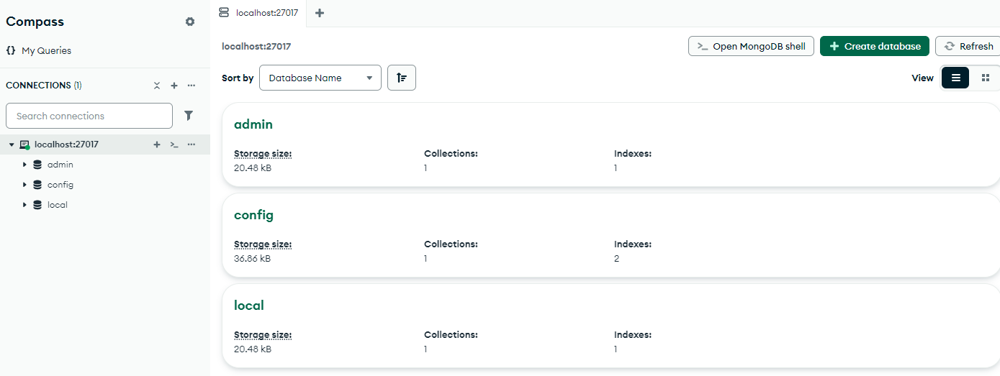
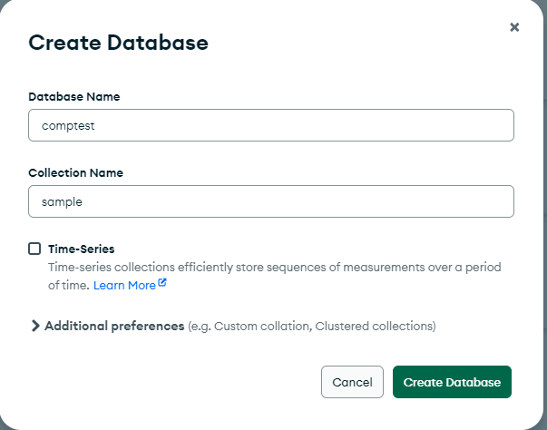
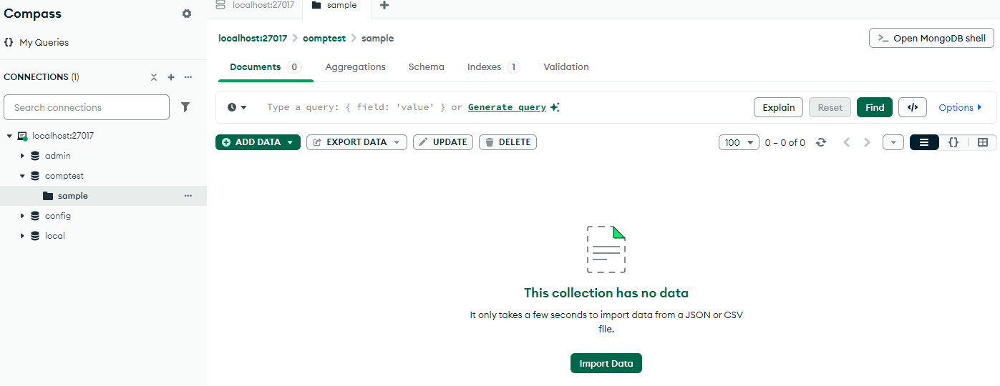
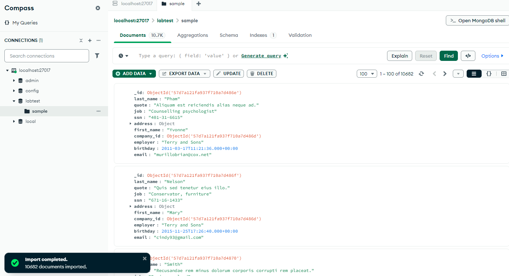

MongoDB Compass Basics lab
Overview
The objective of this lab is to explore MongoDB running on a Red Hat Enterprise Linux guest on an IBM LinuxONE system using MongoDB GUI tool Compass.
We will be performing some of the following basic operations.
- Using Compass, make a Connection to your MongoDB deployment
- Create a database and collection
- Bulk insert documents
MongoDB Compass basics lab steps
Using Compass make a connection to your MongoDB deployment
o In this step we are going to use MongoDB Compass tool to connect to your MongoDB deployment on the Red Hat Linux Server
o If MongoDB Compass is not installed, use the following link
MongoDB Compass Download
to download and install in your laptop
Using the mouse, click the MongoDB Compass icon on your workstation and select Add new Connection.
Then expand the Advanced connection options and select Proxy/SSH tab

Now select SSH with Password option
In the displayed screen, enter the following values:
In the SSH Hostname field, enter your Linux guest ip address
In the SSH Port field, enter 2223
In the SSH Username field, enter your Linux guest user name
In the SSH Password field, enter your Linux guest user Password

Then press the Save and Connect button
And select the localhost:27017 in the left side of navigation
The following is an example screen when you are successfully connected to MongoDB Compass

Create a new database and a collection in that database
In this step we are going to create a new database.
Click the tab
Specify comptest as the database name and collection name as sample and then press create database button.

Now the compest database is created as you can see in the following screen

Import json documents into a collection
In this step we are going to import documents into the sample collection of the comptest database
We have provided sampData.json file with 10682 documents and should be available in the desktop
Select the import data button and choose the sampData.json file
This action will import 10682 documents and you can see them in the MongoDB Compass as in the following display

You may want to select TABLE view to see the documents in readable format 😊 There will be around 10862 documents there.
Feel free to move around different screens of MongoDB Compass to perform your favourite operations.
Summary
In this lab we connected to MongoDB using Compass GUI tool.